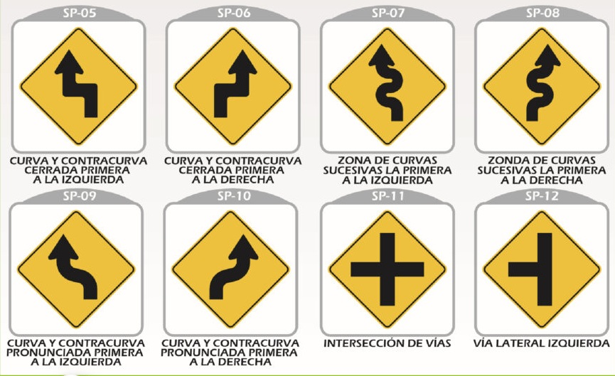
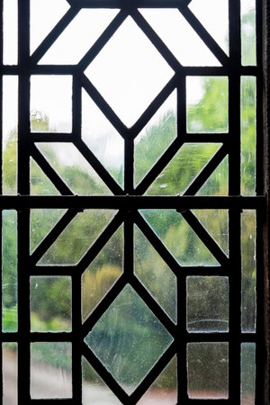
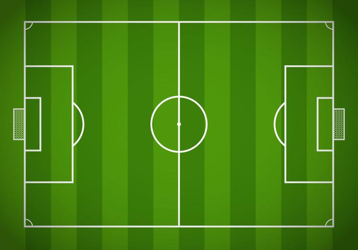
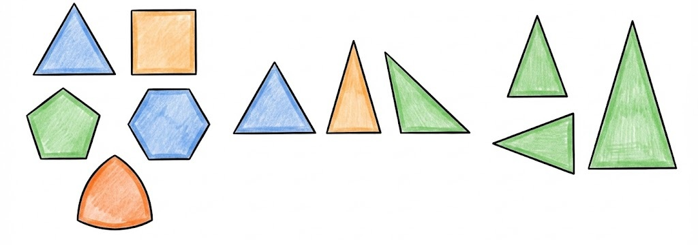
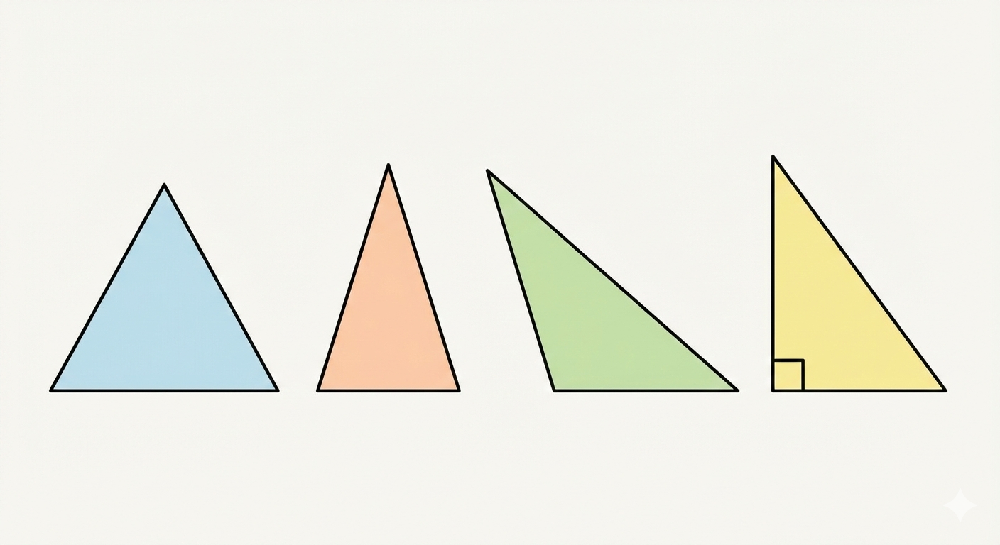
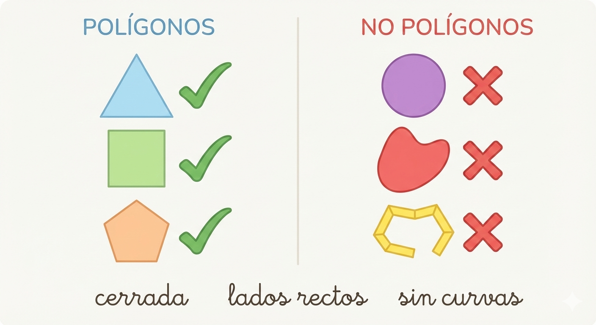
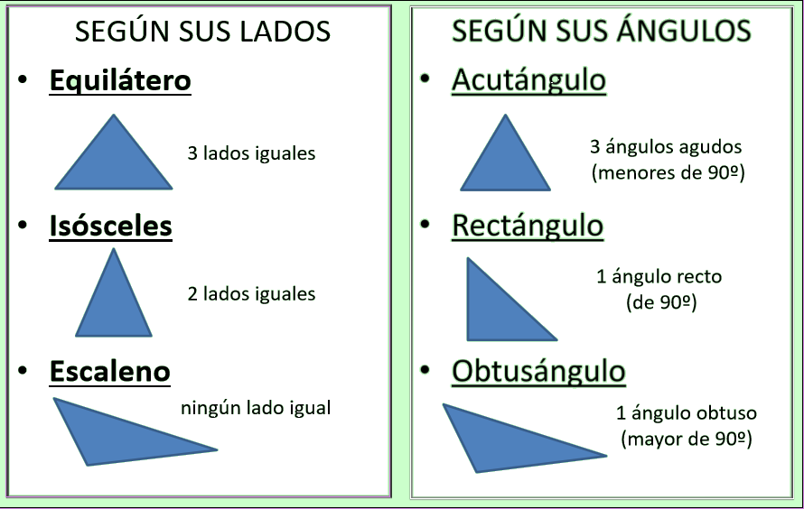

7°
EXPLORACIÓN
En este primer momento vamos a observar, recordar y hablar sobre figuras geométricas que ya hemos visto antes, especialmente polígonos y triángulos, para identificar qué sabemos y cómo lo explicamos con nuestras propias palabras.
Situación inicial:
Observa con atención las imágenes
  
Piensa y responde:
- ★¿Qué figuras geométricas reconoces en estas imágenes?
- ¿Todas las figuras tienen lados rectos?
- ★¿Alguna de ellas tiene forma de triángulo?
- ¿Dónde has visto figuras parecidas dentro del colegio?
Actividad de activación: “Veo – comparo – explico”
Ahora observa con atención las siguientes figuras.

Responde en tu cuaderno:
- ★¿Cuáles de estas figuras crees que son polígonos? ¿Por qué?
- ★¿Qué tienen en común todas las figuras que reconoces como triángulos?
- ¿En qué se parecen y en qué se diferencian estas figuras?
ANALIZA
En este bloque vamos a analizar con más cuidado las figuras que observamos antes, para:
- identificar qué características se repiten,
- reconocer qué hace que una figura sea un polígono,
- comprender por qué el triángulo es un polígono especial.
Aquí empezamos a poner orden a las ideas, usando un lenguaje claro y cercano.
1. Analicemos las figuras: ¿todas son polígonos?
Observa con detenimiento la siguiente imagen
, fondo claro. Aparecen 6 figuras geométricas planas dispuestas en dos filas.")
Responde y explica con tus propias palabras:
- ★¿Cuáles de estas figuras sí son polígonos?
- ★¿Qué tienen en común esas figuras?
- ★¿Por qué algunas figuras no pueden considerarse polígonos?
2. ¿Qué partes podemos identificar en un polígono?
Ahora observa con atención la siguiente figura.
 sobre fondo claro.")
Responde:
- ★¿Cuántos lados tiene la figura?
- ★¿Qué ocurre cuando dos lados se encuentran?
- ★¿Todas las líneas dentro del polígono son lados? ¿Por qué?
3. El triángulo: un polígono diferente
Retoma una idea clave:
“Si el triángulo es un polígono… ¿en qué se parece y en qué se diferencia de los demás?”

- ★¿Cuál es el polígono con menor número de lados?
- ★¿Qué pasaría si una figura tuviera solo dos lados?
- ¿Por qué crees que el triángulo es tan usado en construcciones y estructuras?
4. Clasificamos sin memorizar
Observa distintos triángulos proyectados

Responde:
- ★¿Cuáles triángulos se parecen entre sí? ¿Por qué?
- ★¿En qué te fijaste para compararlos: lados, ángulos o ambos?
- ¿Crees que todos los triángulos pueden ser iguales?
CONOCE ALGO NUEVO
En este bloque vas a aprender conceptos nuevos, pero no como definiciones para memorizar, sino como ideas que ayudan a explicar mejor lo que ya observaste.
Aquí:
- introducimos lenguaje matemático correcto,
- aclaramos conceptos clave,
- y los usamos para describir y comparar figuras.
1. ¿Qué es un polígono?
Después de analizar varias figuras, ahora sí podemos decir:
Un polígono es una figura plana, cerrada, formada solo por segmentos rectos que se unen en sus extremos.
Esta idea recoge exactamente lo que observaste en el bloque anterior.

Todo polígono tiene partes que podemos identificar.
2. Elementos de un polígono:
- Lados: segmentos rectos que forman la figura.
- Vértices: puntos donde se encuentran dos lados.
- Ángulos interiores: ángulos que se forman dentro del polígono.
- Diagonales: segmentos que unen dos vértices que no están seguidos.

3. Clasificación básica de polígonos
a) Según su forma
- Polígono convexo: todos sus ángulos interiores son menores de 180° y sus diagonales quedan dentro.
- Polígono cóncavo: tiene al menos un ángulo interior mayor de 180° y alguna diagonal queda fuera.

b) Según sus lados
- Polígono regular: todos sus lados y ángulos son iguales.
- Polígono irregular: no todos sus lados o ángulos son iguales.
4. El triángulo: definición y tipos
Un triángulo es un polígono de tres lados, tres vértices y tres ángulos.
Clasificación de triángulos
Según sus lados:
- Equilátero: tres lados iguales.
- Isósceles: dos lados iguales.
- Escaleno: todos los lados diferentes.
Según sus ángulos:
- Acutángulo: todos sus ángulos son agudos.
- Rectángulo: tiene un ángulo recto.
- Obtusángulo: tiene un ángulo obtuso.

RECURSOS INTERACTIVOS - GEOGEBRA
Observa con atención qué sucede cuando se mueven los puntos del triángulo y piensa:
- ¿Cambian sus lados?
- ¿Cambian sus ángulos?
- ¿Sigue siendo un triángulo aunque cambie su forma o posición?
Observemos diagonales en polígonos
Mientras observa, responde mentalmente:
¿Qué diferencia hay entre un lado y una diagonal?
¿Las diagonales siempre quedan dentro del polígono? ¿De qué depende?
¿Qué cambia si movemos un vértice del polígono?
Este recurso es complementario y lo manipula el docente para observar y conversar, no para memorizar.
ACTIVIDADES DE APRENDIZAJE
Actividad 1. Reconocemos polígonos
Observa las siguientes figuras.

Para cada figura, responde:
- ★¿Es un polígono?
- ★¿Por qué sí o por qué no?
Escribe tu respuesta usando una frase completa.
Actividad 2. Lado o diagonal
Observa el polígono.

Responde:
- ★¿Qué diferencia hay entre un lado y una diagonal?
- ★Dibuja una diagonal y explica por qué no es un lado.
Usa palabras como: vértice, lado, diagonal.
Actividad 3. El triángulo

Responde:
- ★¿Por qué el triángulo es un polígono?
- ★¿En qué se diferencia de un cuadrilátero o un pentágono?
Explica con tus propias palabras.
Actividad – Observa tu entorno
En tu casa, barrio o colegio, identifica dos objetos que tengan forma de polígono (por ejemplo: ventanas, baldosas, señales, cuadernos, canchas).
Para cada objeto, responde:
- ★¿Qué tipo de polígono crees que es?
- ★¿Cuántos lados tiene?
- ★¿Por qué consideras que sí es un polígono?

Fuentes bibliográficas
Ministerio de Educación Nacional – MEN. Vamos a aprender Matemáticas 7. Bogotá, Colombia.
Ministerio de Educación Nacional – MEN. (2006). Estándares Básicos de Competencias en Matemáticas. Bogotá: MEN.
Ministerio de Educación Nacional – MEN. (2016). Derechos Básicos de Aprendizaje (DBA) – Matemáticas. Grado Séptimo. Bogotá: MEN.